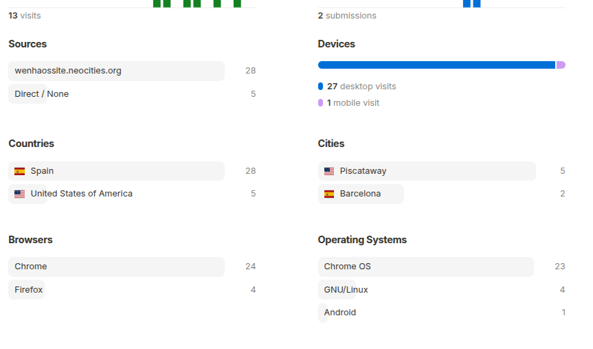
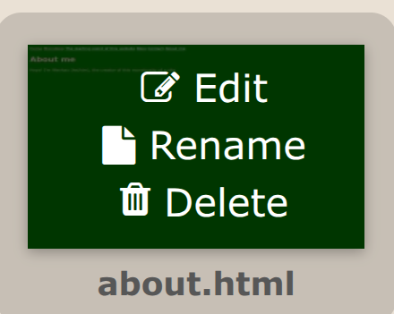
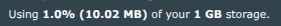

This is a blog page for stuff I think it would never belong onto a standalone place. Also probably website updates.
04/23/2026
04/15/2026
Added a widget in the index.html file. Hope that could be a replacement if atabook goes down.
Hello to anyone from Piscataway. Whatever that place is. Also hello to anyone who uses GNU/Linux.

04/14/2026
Damn... Depression is hitting me hard
04/09/2026
Decided to make a life update: I don't know why I feel so stressed out. Anyways, nothing else to say.
04/08/2026
Removed a couple things.
03/22/2026
Well, time to start an article about vulnerabilities that I found on a school chromebook.
03/21/2026
Removed some stuff, and, next week, I am probably having a few days free.
03/06/2026
So this image was uploaded to catbox.moe and it stopped working ig. I'll update you when it works
Note: It did not

03/03/2026
I love power outages. I love power outages. I love power outages. I love power outages. I love power outages. I love power outages. I love power outages. I love power outages. OMFG I HATE THEM
02/25/2026
Wait... Hold on a minute... This is a newly created file... What the hell

02/18/2026
I shouldn't do this... Time to make an image hosting service.
02/15/2026
Time to suffer with a phone keyboard
02/05/2026
Time to switch things up (kinda)
Random curiosity: Catalonia is just ditching Windows and getting Ubuntu installed on their computers and use FireFox instead of Chrome, IE (not sure if they still use it tho) or Edge. I knew I had to switch to Linux.
02/03/2026
Some day I will run out of storage, and get the 5$ a month subscription

02/02/2026
Hopefuly I don't regret this... Do whatever you want with this link
02/01/2026
Time to say goodbye to Windows. (actually am I lying)
01/30/2026
Here's two thing today:
01/23/2026
I think I am the first one to back this site up on the wayback machine.
01/22/2026
Uhh so Youtube is dumb as if you put a video on an iframe doesn't give you ads. Time to watch everything on an iframe and suffer as fullscreen is not allowed.
01/21/2026
Nothing to say at the moment. Imma start an exposé soon.
/\
| (Says the guy who hasn't finished an already started blogpost)
01/20/2026
I've lately been sick of myself. I don't know why tho.
01/18/2026
Writing this from Windows 7 on an Acer Aspire 5315.